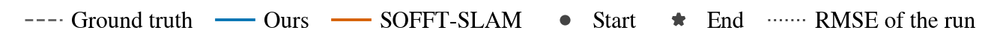

01 / IN MOTION
See the system in action.
18 recordings. Six underwater scenes. One online pipeline.
Online mapping across all 18 recordings. Recorded data are replayed at 1×; the video is accelerated by the factor shown in each panel.
1080p · 01:21 · 7.8 MB02 / OVERVIEW
A sparse scan. A complete SLAM system.
Mechanical scanning sonar acquires one beam at a time. During a slow sweep, vehicle motion distorts the observation and sparse returns complicate registration. Ping-SLAM turns these asynchronous measurements into geometric scans for online localization and mapping.
DVL/IMU odometry aligns the beams, while angular accumulation and spatial filtering form wide-field-of-view pseudo scans. Correlative matching supplies sequential, near-link, and loop constraints to a sparse pose graph, which corrects the trajectory and supports occupancy mapping.
03 / METHOD
From beams to a coherent map.
From asynchronous beams to an optimized pose graph.
Contributions
- Sonar front endConverts asynchronous beam-wise returns into motion-compensated sparse geometric scans.
- Online SLAM systemIntegrates that front end with constraint acceptance rules adapted to acoustic match responses.
- Geometric evaluation protocolScores occupancy and echo-intensity maps against known boundaries, with range coverage and threshold selection specified, together with recordings from four new underwater scenes.
04 / EVALUATION
Measured across real underwater scenes.
Compared with the released SSF system and its re-tuned variant. Results are reported per recording.
Map geometry
A map is scored against the known boundary of the scene. Completeness is the share of the true boundary the map recovers, precision the share of mapped wall cells that fall on it. Echo-intensity maps are cut at the threshold that favours them most, so the comparison does not hinge on a choice we made for the baseline.
Ping-SLAM has lower RMSE than the released baseline on all 14 reference recordings and the re-tuned baseline on 10 of 14. The re-tuned baseline performs better on P1, P2, P4, and P9.
| Recording | Ping-SLAM | SSF re-tuned | SSF released |
|---|---|---|---|
| Public benchmark, motion-capture reference | |||
| P1 | 0.175 | 0.160 | 0.438 |
| P2 | 0.389 | 0.150 | 0.708 |
| P3 | 0.091 | 0.129 | 0.296 |
| P4 | 0.151 | 0.124 | 0.410 |
| P5 | 0.470 | 1.977 | 2.710 |
| P6 | 0.454 | 3.522 | 2.560 |
| P7 | 1.033 | 3.625 | 2.094 |
| P8 | 1.036 | 3.836 | 3.292 |
| P9 | 0.099 | 0.081 | 0.451 |
| P10 | 0.410 | 1.044 | 1.246 |
| P11 | 0.116 | 0.118 | 0.316 |
| P12 | 0.071 | 0.074 | 0.210 |
| P13 | 0.307 | 0.817 | 3.247 |
| Field water, TagSLAM reference | |||
| F1 | 0.072 | 0.079 | 0.125 |
| Recording | Ours compl. | Ours prec. | Tuned compl. | Tuned prec. | Released compl. | Released prec. |
|---|---|---|---|---|---|---|
| P1 | 79.8 | 74.8 | 71.6 | 70.2 | 60.6 | 63.7 |
| P2 | 78.7 | 81.1 | 78.9 | 66.3 | 90.3 | 30.4 |
| P3 | 85.3 | 80.4 | 75.8 | 76.8 | 69.8 | 70.0 |
| P4 | 73.7 | 85.6 | 75.5 | 68.5 | 77.3 | 63.0 |
| P9 | 84.6 | 85.5 | 72.8 | 83.5 | 64.9 | 48.0 |
| P10 | 51.0 | 54.7 | 42.9 | 14.2 | 28.5 | 15.7 |
| P11 | 92.5 | 75.2 | 72.7 | 74.5 | 70.9 | 66.3 |
| P12 | 68.3 | 82.9 | 66.0 | 77.3 | 69.2 | 66.2 |
| F1 | 97.2 | 78.8 | 81.0 | 66.5 | 81.8 | 69.9 |
| Mean | 79.0 | 77.7 | 70.8 | 66.4 | 68.1 | 54.8 |
| Usable maps, of 18 | 17 | 11 | 10 | |||
Trajectories

The eight panels reproduce Fig. 8 of the paper: P3, P5, P6, P7, P10, P12, P13, and F1. Each panel shows the trajectory above and translational error below.
Runtime
Processing load is the share of the recording duration spent computing. Ping-SLAM stays between 0.1% and 0.4% across all eighteen recordings. The re-tuned baseline ranges from 7.7% to 48.0%. Both keep up with a 1× replay, but the margin differs by two orders of magnitude.
05 / RECONSTRUCTION
Constructed Maps
Every recording, every system, same rendering.
06 / DATASETS
From a laboratory pool to field waters.
Eighteen recordings, six scenes, sonar ranges from 3 to 30 metres.
Availability
P1 to P13 are the Bremen mechanical scanning sonar benchmark by Hansen, Belenis, Bande Firvida, Creutz and Birk, IEEE Access 2024. B1 is the flooded bunker recording released with the SSF work of Hansen and Birk, ICRA 2024. F1 to F4 are new and will be released with the paper, together with the evaluation scripts and the per-recording configurations.
07 / RESOURCES
Built for reproducible research.
The ROS 2 implementation, four self-collected datasets, evaluation tools, and per-recording configurations will be linked here upon publication.